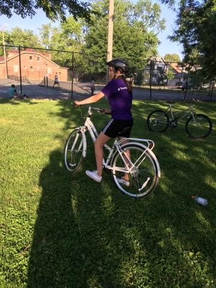
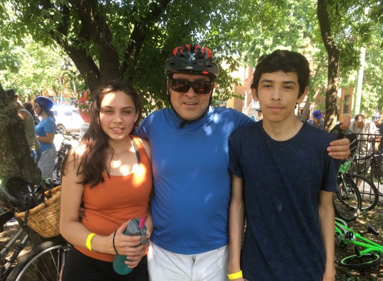
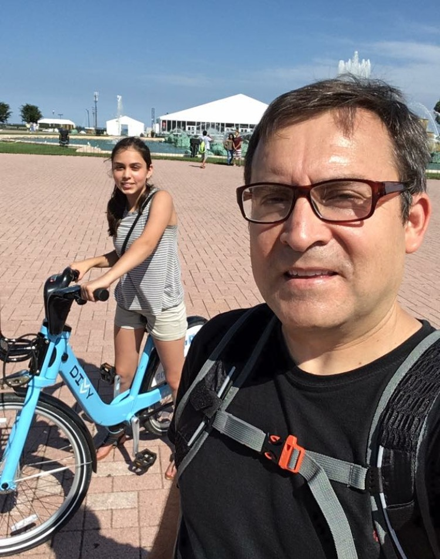

Biking has always been one of my favorite ways to spend my free time.
I often go biking with my dad around Chicago. We often go on the 606 trail all the way towards Lincoln Park Zoo.

Here is an image of myself when I bought a new bike for myself.

Here is an image of my dad, brother, and I after we finished our first bike race.

Sometimes my dad and I spend the entire day biking. Here is us after biking all the way to the Buckingham fountain. The farthest we've ever biked was all the way to Evanston!

The 606 trail
Real World Connections
Biking is very popular around the world. The Tour de France, for example, is the most famous bicycle race in the world. There are currently over 1 billion that have been manufactured across the globe. It has been scientifically proven that bicycles also improve health and quality of life. After one year of bicycling, the average person loses 13 pounds. In addition, owning a bike costs about twenty times less than owning a car. While there are over 800 fatalities every year, these risks can be reduced by taking safety precautions like wearing a helmet. Overall, biking has a lot more benefits than drawbacks.